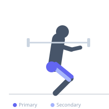

Exercise guide / Low-Bar Barbell Back Squat
Low-Bar Barbell Back Squat
The low-bar barbell back squat positions the bar across the rear deltoids and upper traps, lower than the high-bar position. This creates a more forward torso lean during the descent, recruiting the hips and glutes more prominently than a high-bar squat. It is the preferred squat variation in powerlifting due to the mechanical advantage it provides for heavier loads.
Primary muscles
gluteus maximus
rectus femoris
vastus lateralis
vastus medialis
vastus intermedius
Secondary muscles
biceps femoris long head
semitendinosus
semimembranosus
Stabilizers
erector spinae
transverse abdominis
Equipment
Standard Barbell
Power Rack (Squat Cage)


Starting position
- Stand inside a power rack with the bar resting across your rear deltoids and upper traps, below the spine of the scapula. Grip the bar slightly wider than shoulder width, feet shoulder-width or slightly wider with toes turned out 20-30 degrees.
Setup
- Set the bar on the rack at upper-chest height. Duck under the bar and position it across your rear delts. Unrack by straightening the legs, step back two steps, and set your stance.
Steps
- Step 1: Take a deep breath into your abdomen and brace your core fully (Valsalva maneuver).
- Step 2: Initiate the descent by pushing the knees out and sitting the hips back and down simultaneously.
- Step 3: Descend until the hip crease is at or below parallel to the knee, maintaining a forward torso lean.
- Step 4: Drive through the entire foot, pushing the knees out, and extend the hips and knees together to return to standing.
Coaching cues
- Bar on the shelf — rear delts make the shelf
- Push the floor away
- Knees out, chest up
- Drive the hips through at lockout
Breathing
- Inhale and brace before each rep. Exhale at the top after completing the repetition.
Range of motion
- Hip crease must reach at least parallel with the top of the knee for a full squat. Powerlifting requires breaking parallel.
Tempo
- 3-1-1-0 (3s down, 1s pause at bottom, 1s up, no pause at top)
Common mistakes
- Bar sliding up onto the neck instead of staying on the rear delts
- Knees caving inward during the ascent
- Raising the hips faster than the shoulders out of the hole
- Insufficient core bracing leading to lumbar rounding
Safety
- Always use a power rack with safety bars set appropriately
- Develop adequate hip flexor and ankle mobility before attempting heavy loads
- Learn to bail the bar safely to the safeties if needed
Training
- strength: 1–5 reps
- hypertrophy: 5–10 reps
- endurance: 12–20 reps
- strength: 3–6 sets
- hypertrophy: 3–5 sets
- endurance: 2–4 sets
- Rest: {'strength': 240, 'hypertrophy': 120, 'endurance': 60}